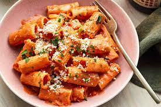

Pasta

Description:
Pasta is a delicious and popular Italian dish that is very easy to make that require very simple ingredients.
It is healthy and very affordable and can feed the whole family.
Ingredients:
- 8 ounces pasta (any shape will work)
- 1 cup marinara sauce
- 2 tablespoons olive oil
- 2 cloves garlic, minced
- Salt and pepper, to taste
- Optional: fresh basil or parsley for garnish
Steps:
- Bring a large pot of salted water to a boil. Add the pasta and cook according to package instructions until al dente. Drain the pasta and set aside.
- In a small saucepan, heat the olive oil over medium heat. Add the garlic and cook until fragrant, about 1 minute.
- Add the marinara sauce to the saucepan with the garlic and oil. Bring the mixture to a simmer and cook for 5-10 minutes, until the sauce has thickened slightly.
- Add the cooked and drained pasta to the saucepan with the marinara sauce. Toss the pasta with the sauce until it is evenly coated.
- Taste the pasta and season with salt and pepper as needed.
- Serve the pasta hot, garnished with fresh basil or parsley if desired. Enjoy!
Home |
Top